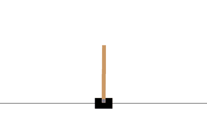

What you'll do, how it's marked, and how to get started
Dr Leander Grech
CCE5502 – Fundamentals of AI and ML
You will train DQN agents on your own CartPole, switch off parts of DQN, break the motor, design a reward — and explain what you see using the lectures.
All algorithms and scripts are provided. You run experiments and write one small reward function.
Short, specific explanations of your plots and videos.
CPU only. One training run ≈ 5–10 minutes.

Balances for all 500 steps (10 s), nudging left and right every 20 ms.
The pole falls on its own. The episode ends at 12° after 94 steps (1.9 s); we keep simulating to show the fall.
State $(x, \dot x, \theta, \dot\theta)$ · actions: push left or right · reward +1 per step · ends when $|\theta| > 12°$, $|x| > 2.4$ m, or after 500 steps.
| Part | What you do | Marks | |
|---|---|---|---|
| 0 Predictions | 5 short guesses on the VLE, before experimenting | 5 | |
| A Baseline | train 3 agents, plot, test, watch | 30 | |
| B What makes DQN work? | remove the target network / replay buffer | 22 | |
| C The broken motor | a delayed, weaker motor; Markov property | 22 | |
| D Design a reward | keep the cart at your target x* | 16 | |
| E Reflection | your predictions vs reality · AI-use statement | 5 |
Every part is broken into small steps (A1, A2, …) worth 1–7 marks each — see the assignment sheet. All 100 marks are for the report.
Your student number decides your physics, sensor noise, broken motor and target. Run python setup_student.py <id> and paste the card into your report.
Open a terminal and type these one at a time (the grey text after # is a comment, don't type it):
git clone https://github.com/leander-grech/CCE5502-RL-Lectures-2026.git cd CCE5502-RL-Lectures-2026/assignment python -m venv .venv && source .venv/bin/activate # Windows: .venv\Scripts\activate pip install -r requirements.txt python setup_student.py 123456M # your student number python train.py --name smoke --timesteps 5000 # ~30 s check that everything works
Go to the folder and switch the environment on again:
cd CCE5502-RL-Lectures-2026/assignment source .venv/bin/activate # Mac / Linux .venv\Scripts\activate # Windows
Save your progress after each part:
git add -A && git commit -m "part A"
Seeds are independent. Instead of one command with --seeds 0 1 2, open 3 terminals (activate the environment in each) and run one line in each, at the same time:
python train.py --name q1_baseline --seeds 0 python train.py --name q1_baseline --seeds 1 python train.py --name q1_baseline --seeds 2
All statistics: tensorboard --logdir runs, then open http://localhost:6006.
runs/q1_baseline/seed0/ ├── config.json # all settings + your fingerprint ├── monitor.csv # every training episode ├── tb/ # TensorBoard ├── model.zip # agent at the end ├── best_model.zip # best agent during training └── eval.json # 20 test episodes
Every number in your report must name the file it came from:
mean length 412 ± 55 (runs/q3_faulty/seed*/eval.json)
No file → no marks. Never delete or edit run folders.
We re-run your submitted agents on your variant — numbers must match.
Before running experiments, answer 5 short questions on the VLE (due one week after release):
Being wrong is fine — you get the marks for a reasoned answer on time. In Part E you explain what surprised you. That's where the learning is.
python train.py --name q1_baseline --seeds 0 1 2
python plot_runs.py runs/q1_baseline -o figures/A_curves.png
eval.json in each runs/q1_baseline/seed*/ folderpython evaluate.py runs/q1_baseline/seed0 --video videos/A_best.mp4 python evaluate.py runs/q1_baseline/seed0 --trace traces/A_seed0.csv
Then explain: when does it first reach 500? Same for all seeds? Drops? Does the cart drift? Is the noisy observation still Markov?
Switch off each of the two tricks from Lecture 2 that made deep Q-learning stable:
The target network is always identical to the Q-network → the target moves with every update.
The buffer keeps only the last 32 transitions → every minibatch is consecutive, correlated steps.
python train.py --name q2_no_target --ablation no-target --seeds 0 1 2 python train.py --name q2_no_replay --ablation no-replay --seeds 0 1 2
python plot_runs.py runs/q1_baseline runs/q2_no_target runs/q2_no_replay -o figures/B_ablation.png
train/loss (B3): tensorboard --logdir runs · test results: each run's eval.json (B2)Then explain what happened and why.
Your faulty robot executes every command 3 or 4 steps late and is weaker on one side (see your card).
python evaluate.py runs/q1_baseline/seed0 --faulty
python evaluate.py runs/q1_baseline/seed0 --faulty --video videos/C_zeroshot.mp4 --trace traces/C_zeroshot.csv
python train.py --name q3_faulty --faulty --seeds 0 1 2
python train.py --name q3_faulty_hist --faulty --action-history K --seeds 0 1 2 python plot_runs.py runs/q1_baseline runs/q3_faulty runs/q3_faulty_hist -o figures/C_retrain.png
New goal: keep the pole up and keep the cart near your target $x^*$ (on your card). You may only change the reward.
python train.py --name q4_naive --reward naive --seeds 0 1 python evaluate.py runs/q4_naive/seed0 --video videos/D_naive.mp4
rl_assignment/rewards.py (open it in any text editor), then train it and record a trace (D2)
class TargetPositionReward(gym.RewardWrapper): def reward(self, reward): x, x_dot, theta, theta_dot = self.env.unwrapped.state return ... # your idea here
python train.py --name q4_target --reward target --seeds 0 1 python evaluate.py runs/q4_target/seed0 --trace traces/D_target.csv
“The seeds behave differently because RL is random. DQN uses ε-greedy exploration, so different seeds explore differently, which leads to different results.”
True, general, could be about anyone's run.
“In Fig. A2, seed 2 first reaches 500 at ~70k steps, 30k later than seeds 0 and 1 (runs/q1_baseline/seed*/monitor.csv). TensorBoard shows ε already at 0.02 after 10k steps for all seeds, so seed 2 had little random exploration left while its Q-values were still poor; its episodes stayed short, so …”
Specific, evidenced, uses the concept to explain this result.
Short is fine. There are no marks for length. Max 8 pages.
An AI can write a fluent paragraph about DQN. It can't run your variant, watch your video, or explain your plots if we ask you about them. Those are where the marks are.
Only if we need to confirm that the work is your own, we may invite you to a short (≈ 10 min) chat with your laptop and repository open. We might:
We pick one of your plots. Walk us through it.
We change one setting (γ, ε, …). You predict what happens, then we look.
One or two questions linking your results to the lectures.
It's a conversation, not an exam, and it carries no marks of its own. If you ran the experiments and thought about them, you'll be fine. If you can't explain something in your report, marks for that part may be reduced.
| When | What |
|---|---|
| Wed 25 Nov | Released · install, setup_student.py, smoke test |
| Wed 2 Dec | Part 0 predictions due (VLE) · then Part A |
| December | Parts B and C |
| Fri 8 Jan 2027 | Deadline: Parts D and E · submit one ZIP on the VLE |
| After the deadline | Oral only if you are invited |